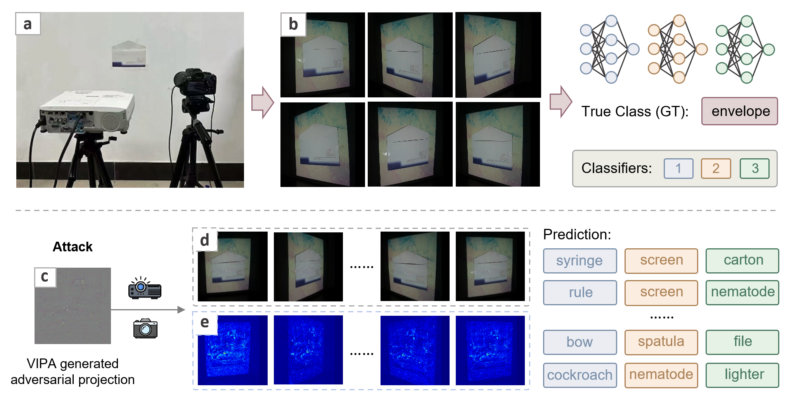
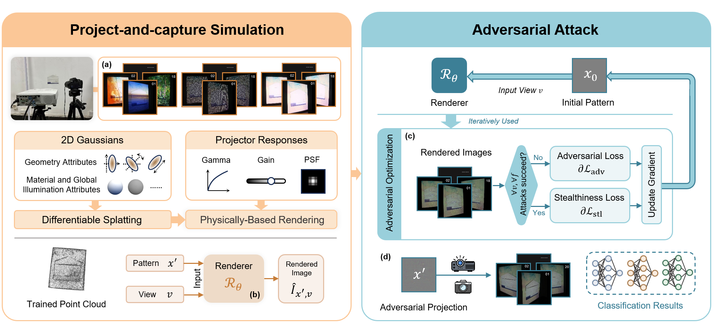

Abstract
Projector-based adversarial attack aims to physically manipulate real-world scenes by projecting adversarial patterns, thereby causing deep image classifiers to produce incorrect predictions. However, existing stealthy projector-based adversarial attack methods model the project-and-capture process in a single and static view, limiting their view-invariant capability and practical applicability in dynamic environments. In this paper, we introduce View-Invariant Projector-Based Adversarial Attack (VIPA), a novel method designed to overcome these limitations by achieving both view-invariant and classifier-agnostic adversarial attacks in the physical world. We first leverage a view-invariant projector-camera system simulation method to model the physical interactions between projected patterns and real-world surfaces. To ensure robustness and stealthiness of the attack across different views, VIPA optimizes adversarial projections by aggregating simulated attack losses from multiple views. This joint optimization across diverse views helps maintain robustness regardless of the viewpoints. Finally, the optimized patterns are physically projected into real-world scenes, where they successfully fool various classifiers from different viewpoints, thereby enabling robust and practical view-invariant adversarial attacks. Our experiments in both targeted and untargeted attacks demonstrate that VIPA consistently achieves higher attack success rates than existing methods, while also enhancing stealthiness and ensuring minimal perceptual degradation across all tested views.
Overview

View-Invariant Projector-Based Adversarial Attack (VIPA): (a) System setup: consists of a projector, a camera, and a physical object. (b) Scene images captured from different viewpoints by the camera under normal lighting conditions. These images are classified by different classifiers, which unanimously predict the object as envelope. (c) An adversarial projection generated by our VIPA, designed such that when projected onto the object, the resulting camera-captured scene can be misclassified. (d) Camera-captured adversarial scenes from unseen viewpoints. The corresponding predictions from three classifiers are shown on the right, where each row represents one viewpoint. (e) Normalized difference maps between (d) and their corresponding clean scenes (analogous to (b)) captured from the same viewpoints. Clearly, the camera-captured adversarial projection remains visually stealthy while consistently fooling different classifiers from multiple viewpoints.

The system overview of our VIPA. The proposed framework is presented as two stages, Project-and-capture Simulation and Adversarial Attack, which are distinguished by different colors. In the Project-and-capture Simulation stage, (a) we acquire training data by projecting, at each of 18 training viewpoints, a set of patterns and capturing the corresponding images. (b) These captures are then utilized to train a differentiable renderer \(\mathcal{R}_\theta\) that jointly models the scene's appearance and the projector-camera imaging process. Once trained, \(\mathcal{R}_\theta\) is used as a forward simulator that, given a camera viewpoint \(v\) and a projector pattern \(x'\), synthesizes the rendered image \(\hat{I}_{x',v_i}\). In the Adversarial Attack stage, (c) starting from a plain gray initial pattern \(x_0\), we iteratively refine the adversarial projection pattern through adversarial optimization. At each iteration, the rendered images \(\{\hat{I}_{x',v_i}\}_{i=1}^{V}\) from all considered viewpoints \(v_i\) are evaluated by multiple classifiers, and if the minimum classifier confidence is below the target threshold or the perturbation remains within the stealthiness budget, a classifier-agnostic adversarial-loss gradient is applied to update \(x'\); otherwise, it is updated using the stealthiness loss gradient, as specified in the paper. (d) Finally, the optimized adversarial projection \(x'\) is physically deployed by projecting it onto the target scene, and its effectiveness is verified by randomly sampling 20 viewpoints to evaluate real-world transferability and the resulting classification outcomes.
BibTeX
@article{Han2026VIPA,
author={Han, Jiyu and Deng, Qingyue and Huang, Bingyao},
journal={IEEE Transactions on Visualization and Computer Graphics},
title={VIPA: View-Invariant Projector-Based Adversarial Attack},
year={2026}
}